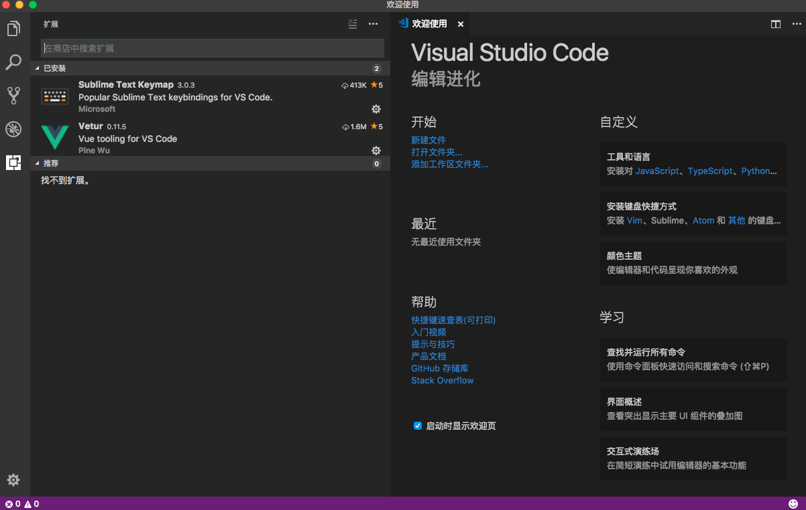

应用介绍
https://code.visualstudio.com/
界面简洁大方，^_^
Vue插件安装
在 VSCode Marketplace https://marketplace.visualstudio.com/vscode 搜素Vue 出现关于语法高亮的插件有 Vue 2 Snippets，vue-beautify，vue-color，Vetur等等。花花绿绿的，往下翻看，目前使用率最高的就是Vetur了。
安装插件：⌘P 然后输入 ext install vetur 然后回车点安装即可。
但是如果你使用惯了Vim/Sublime/Atom等，VSCode允许安装自己的键盘快捷方式。

我个人选择了Sublime，设置后并激活，这时按下command+shift+p
输入 Vetur
VS Code ESLint extension
安装插件和Vetur类似。
ESLint 不是安装后就可以用的，还需要一些环境和配置：
eg：首先在自己的工作空间建立一个文件夹xmall-front，zsh中运行 npm init
然后依次执行命令，快速体验下：
|
|
在 vscode 中配置下 ESLint：
eslint.validate - an array of language identifiers specify the files to be validated. Something like “eslint.validate”: [ “javascript”, “javascriptreact”, “html” ]. If the setting is missing, it defaults to [“javascript”, “javascriptreact”].
查看扩展：ESLint 的Settings Options，发现确实默认不支持vue文件啊。
所以说虽然安装了eslint-plugin-html还是需要配置一下的：On a Mac, click Code > Preferences > Settings
|
|
安装插件-提高效率
所有插件都类似于Sublime使用Package Control安装，按下快捷键⌘⇧P，在命令提示框搜索插件即可。
- Auto Close TagAutomatically add HTML/XML close tag, same as Visual Studio IDE or Sublime Text does
- Auto Rename TagAuto rename paired HTML/XML tag
- Bookmarks添加行书签
- Indenticator缩进高亮
- Quokka.js不需要手动运行，行内显示变量结果
- JavaScript (ES6) code snippetsES6语法代码段
- language-stylusStylus语法高亮和提示
- String Manipulation字符串转换处理（驼峰、大写开头、下划线等等）
- VueHelperVue2代码段（包括Vue2 api、vue-router2、vuex2）
- File PeekThe extension supports all the normal capabilities of symbol definition tracking, but does it for file names
- Path IntellisenseVisual Studio Code plugin that autocompletes filenames
- TODO ParserParse TODOs in your working files
- Git History (git log)View git log, file or line History
- Git Lens显示文件最近的commit和作者，显示当前行commit信息
- Git History Diffiew git history. View commit details. View diff of committed files
- gitignore.gitignore文件语法
- npmnpm commands for VSCode
- npm Intellisense导入模块时，提示已安装模块名称
- Output Colorizer彩色输出信息
- markdownlintMarkdown linting and style checking for Visual Studio Code
- vscode-iconsIcons for Visual Studio Code(大大的好啊)
快捷键
见官网。https://code.visualstudio.com/shortcuts/keyboard-shortcuts-macos.pdf
修改默认快捷键
打开默认键盘快捷方式设置：
修改 keybindings.json：
|
|
结语
开启一波Vue学习潮，干后端的也不能落伍啊